Getting Started
Before jumping into development, it is important to build a strong foundation for a new project. There are several project templates in the Dynamo developer community that are excellent places to start, but an understanding of how to start a project from scratch is even more valuable. Building a project from the ground up will provide a deeper understanding of the development process.

Creating a Visual Studio Project
Visual Studio is a powerful IDE where we can create a project, add references, build .dlls, and debug. When creating a new project Visual Studio will also create a Solution, a structure for organizing projects. Multiple projects can exist inside a single solution and can be built together. To create a ZeroTouch node, we will need to start a new Visual Studio project in which we will write a C# class library and build a .dll.

The New Project window in Visual Studio
- Start by opening Visual Studio and creating a new project:
File > New > Project- Choose the
Class Libraryproject template- Give the project a name (we've named the project MyCustomNode)
- Set the file path for your project. For this example we will leave it at the default location
- Select
Ok
Visual Studio will automatically create and open a C# file. We should give it an appropriate name, setup the workspace, and replace the default code with this multiplication method.
namespace MyCustomNode
{
public class SampleFunctions
{
public static double MultiplyByTwo(double inputNumber)
{
return inputNumber * 2.0;
}
}
}
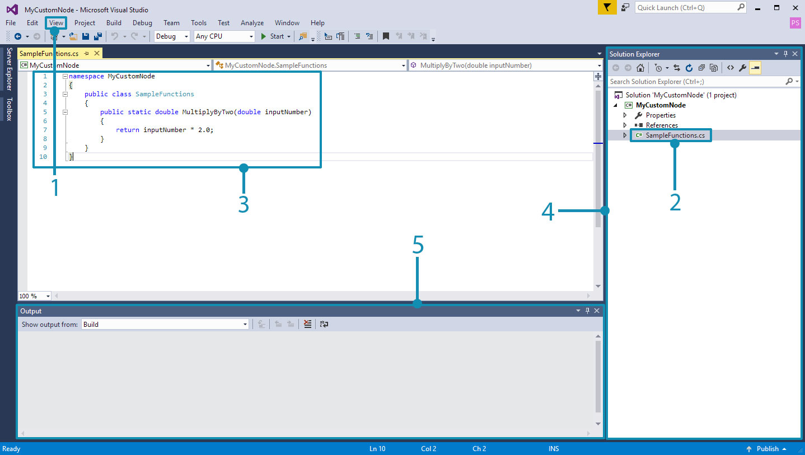
- Open the Solution Explorer and Output windows from
View.- Rename the
Class1.csfile toSampleFunctions.csin the Solution explorer on the right.- Add the code above for the multiplication function. We will cover the specifics of how Dynamo will read your C# classes later on.
- The Solution Explorer: this gives you access to everything in your project.
- The Output window: we'll need this later on to see if our build was successful.
The next step is to build the project, but before doing that there are a few settings we need to check. First, make sure that Any CPU or x64 is selected as the Platform target and that Prefer 32-bit is unchecked in the Project Properties.
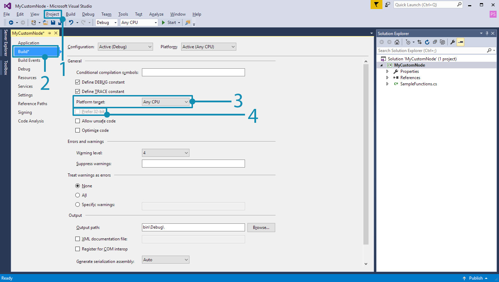
- Open the project properties by selecting
Project > "ProjectName" Properties- Select the
Buildpage- Select
Any CPUorx64from the drop-down menu- Ensure that
Prefer 32-bitis unchecked
Now we can build the project to create a .dll. To do this, either select Build Solution from the Build menu or use the short-cut CTRL+SHIFT+B.
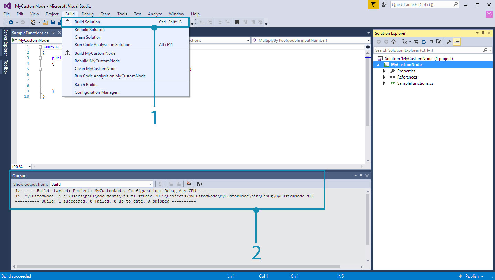
- Select
Build > Build Solution- You can determine if your project built successfully by checking the Output window
If the project has been built successfully there will be a .dll named MyCustomNode in the project's bin folder. For this example we left the project's file path as Visual Studio's default at c:\users\username\documents\visual studio 2015\Projects. Let's take a look at the project's file structure.
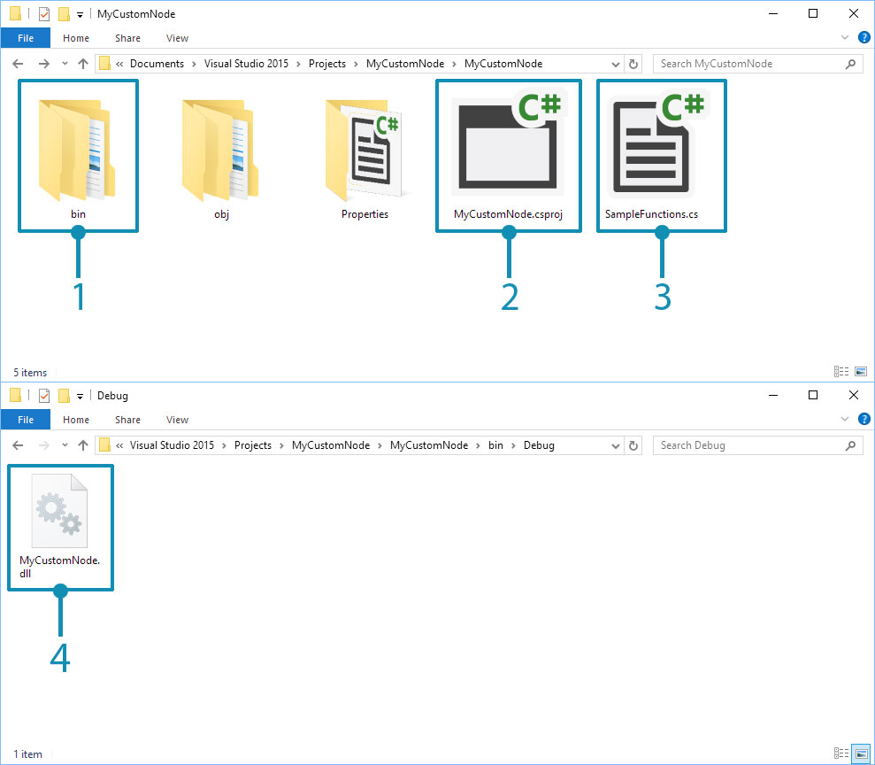
- The
binfolder contains the.dllbuilt from Visual Studio.- The Visual Studio project file.
- The class file.
- Since our solution configuration was set to
Debug, the.dllwill be created inbin\Debug.
Now we can open Dynamo and import the .dll. With the Add feature, navigate to the project's bin location and select the .dll to open.
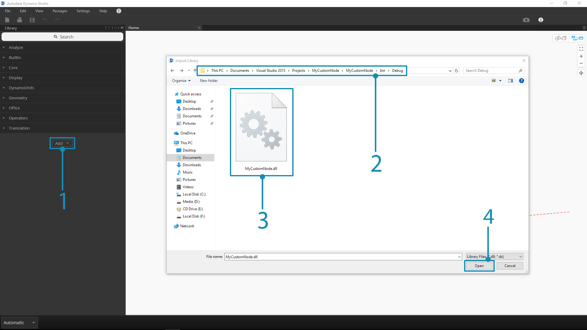
- Select the Add button to import a
.dll- Navigate to the project location. Our project is located in Visual Studio's default file path:
C:\Users\username\Documents\Visual Studio 2015\Projects\MyCustomNode- Select the
MyCustomNode.dllto import- Click
Opento load the.dll
If a category is created in the library called MyCustomNode, the .dll was imported successfully! However, Dynamo created two nodes from what we wanted to be a single node. In the next section we will explain why this happens and how Dynamo reads a .dll.
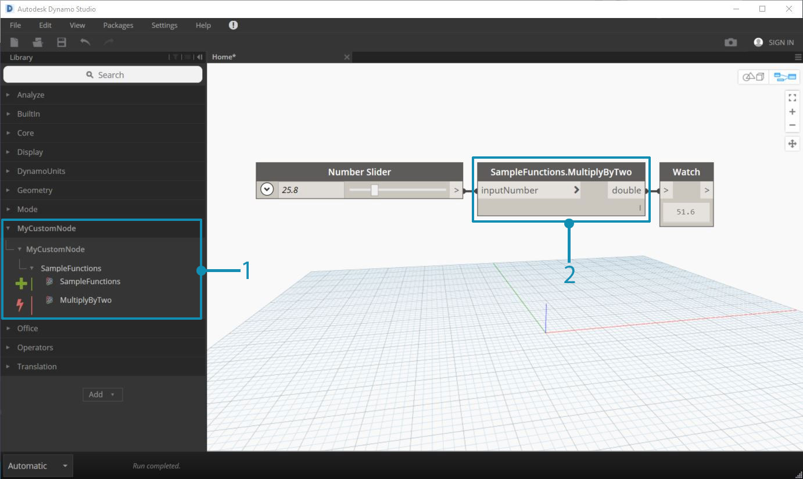
- MyCustomNode in the Dynamo Library. The Library category is determined by the
.dllname.- SampleFunctions.MultiplyByTwo on the canvas.
How Dynamo Reads Classes and Methods
When Dynamo loads a .dll, it will expose all public static methods as nodes. Constructors, methods, and properties will be turned into Create, Action, and Query nodes respectively. In our multiplication example, the MultiplyByTwo() method becomes an Action node in Dynamo. This is because the node has been named based on its method and class.
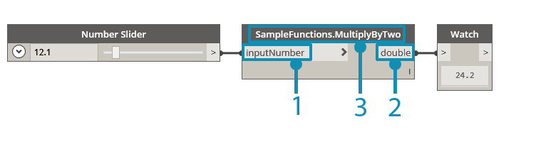
- The input is named
inputNumberbased on the method's parameter name.- The output is named
doubleby default because that is the data type being returned.- The node is named
SampleFunctions.MultiplyByTwobecause those are the class and method names.
In the example above, the extra SampleFunctions Create node was created because we did not explicitly provide a constructor and therefore one was automatically created. We can avoid this by creating an empty private constructor in our SampleFunctions class.
namespace MyCustomNode
{
public class SampleFunctions
{
//The empty private constructor.
//This will be not imported into Dynamo.
private SampleFunctions() { }
//The public multiplication method.
//This will be imported into Dynamo.
public static double MultiplyByTwo(double inputNumber)
{
return inputNumber * 2.0;
}
}
}
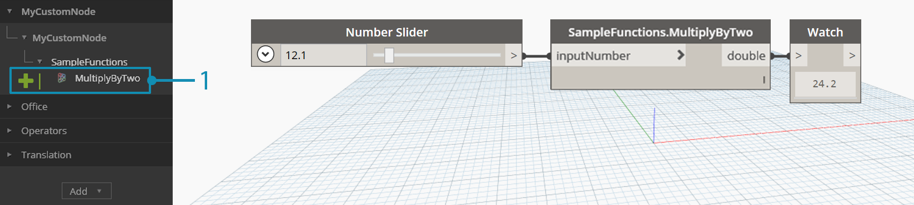
- Dynamo has imported our method as a Create node
Adding Dynamo NuGet Package References
The multiplication node is very simple and no references to Dynamo are required. If we want to access any of Dynamo's functionality to create geometry for example, we will need to reference the Dynamo NuGet packages.
- ZeroTouchLibrary - Package for building zero touch node libraries for Dynamo that contains the following libraries: DynamoUnits.dll, ProtoGeometry.dll
- WpfUILibrary - Package for building node libraries for Dynamo with custom UI in WPF that contains the following libraries: DynamoCoreWpf.dll, CoreNodeModels.dll, CoreNodeModelWpf.dll
- DynamoServices - DynamoServices library for Dynamo
- Core - Unit and system test infrastructure for Dynamo that contains the following libraries: DSIronPython.dll, DynamoApplications.dll, DynamoCore.dll, DynamoInstallDetective.dll, DynamoShapeManager.dll, DynamoUtilities.dll, ProtoCore.dll, VMDataBridge.dll
- Tests - Unit and system test infrastructure for Dynamo that contains the following libraries: DynamoCoreTests.dll, SystemTestServices.dll, TestServices.dll
- DynamoCoreNodes - Package for building core nodes for Dynamo that contains the following libraries: Analysis.dll, GeometryColor.dll, DSCoreNodes.dll
To reference these packages in a Visual Studio project, either download the package from NuGet at the links above and manually reference the .dlls or use the NuGet Package Manager in Visual Studio. First we can walk through how to install them with NuGet in Visual Studio.
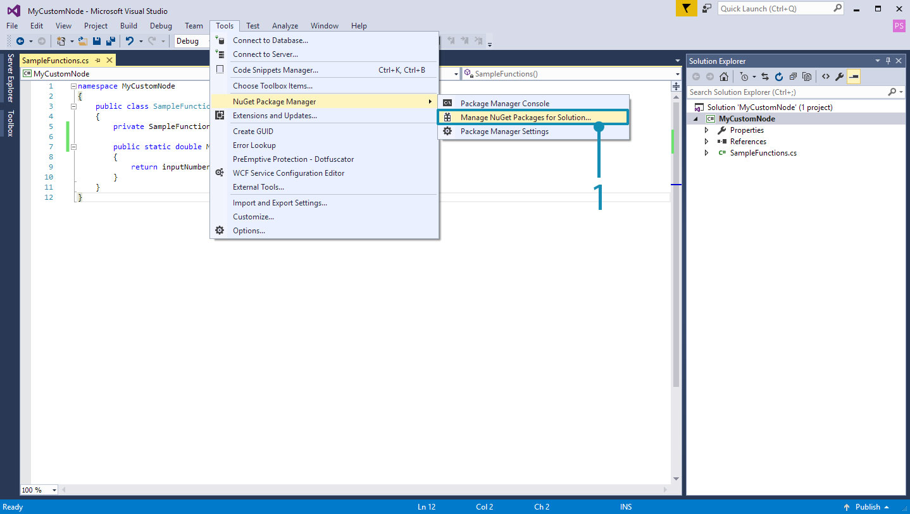
- Open the NuGet package manager by selecting
Tools > NuGet Package Manager > Manage NuGet Packages for Solution...
This is the NuGet Package Manager. This window shows what packages have been installed for the project and lets the user browse for others. If a new version of the DynamoServices package is released, packages can be updated from here or reverted to an earlier version.
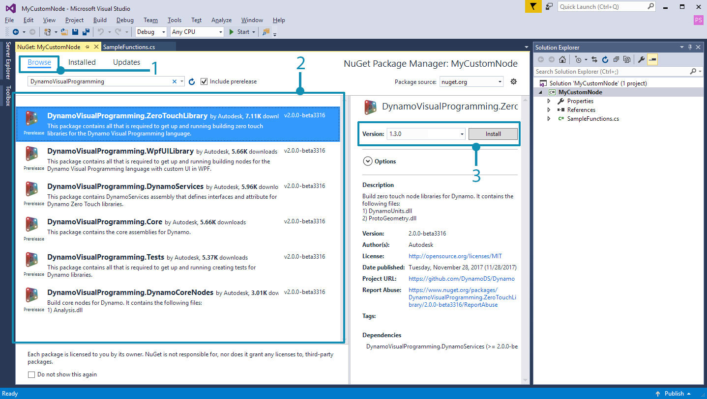
- Select browse and search for DynamoVisualProgramming to bring up the Dynamo Packages.
- The Dynamo packages. Selecting one will show it's current version and description of what's inside.
- Select the package version you need and click install. This installs a package for the specific project you are working in. Since we are using the latest stable release of Dynamo, version 1.3, choose the corresponding package version.
To manually add a package downloaded from the browser, open the Reference Manager from the Solution Explorer and browse for the package.
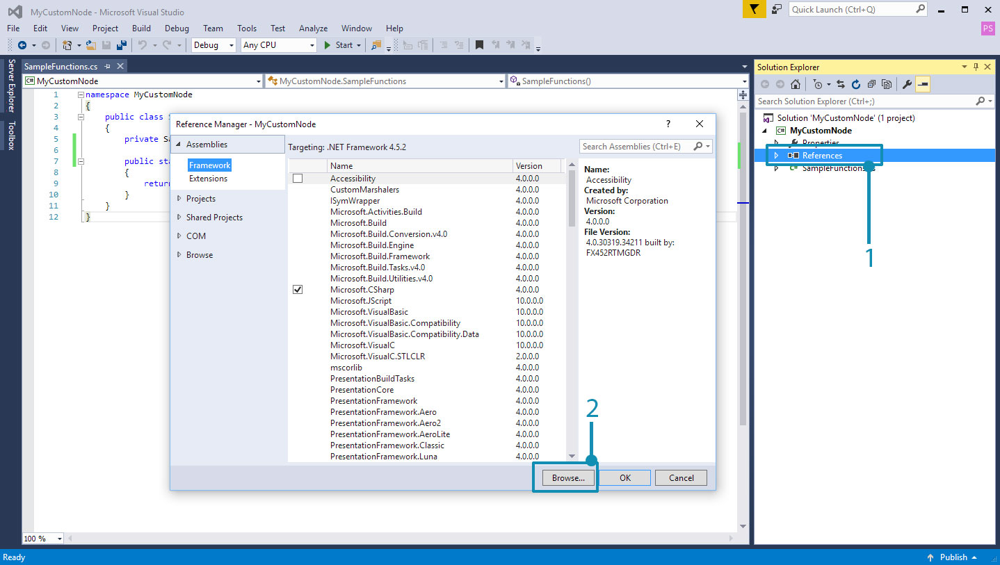
- Right click
Referencesand selectAdd Reference.- Select
Browseto navigate to the package location.
Now that Visual Studio is configured properly and we have successfully added a .dll to Dynamo, we have a solid foundation for the concepts going forward. This is only the beginning, so keep following along to learn more about how to create a custom node.